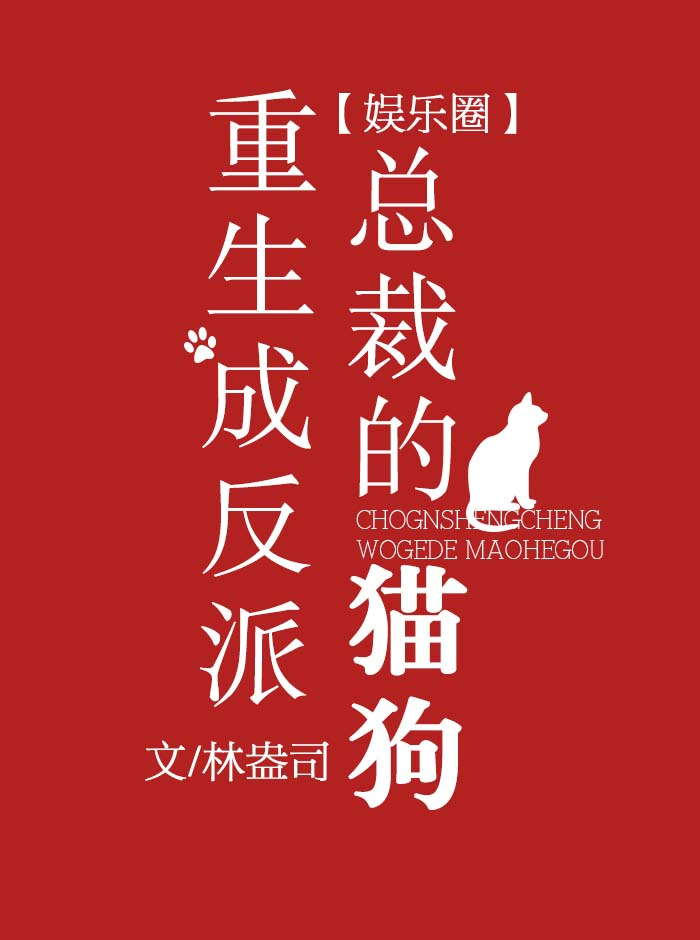

Wen MingYi tiene un gege (hermano mayor) de la infancia vecino de al lado. Su gege es rico, guapo y poderoso, y lo malcriaría. Sin embargo, bajo la influencia de la novela, Wen MingYi protagonizó una guerra fría plagada de desprecio y burla con su gege durante tres años.
Por fin, los tres años terminaron. Wen MingYi estaba a punto de hacer las paces con su gege cuando, empujado por el personaje principal de la novela, Slam, murió.
Después de su muerte, Wen MingYi se dio cuenta de que él y su gege de la infancia no eran más que personajes secundarios de una novela. Tuvo que morir para completar la verdadera relación amorosa de los personajes principales. Debido a su muerte, su gege se convirtió en un villano, convirtiéndose en un trampolín para el verdadero amor de los personajes principales, y que finalmente quedó reducido a una persona sin un centavo que perdió a su familia y su vida.
Wen MingYi no pudo soportar esto sin hacer nada, ¡pero! ¡Se dio cuenta de que reencarnó! ¡Había renacido en el momento en que el personaje principal del loto blanco se preparaba para seducir a su gege!
Wen MingYi corrió apresuradamente hacia su gege, queriendo decirle que apreciara la vida y que se alejara del loto blanco.
El reloj sonó a las 9 en punto y descubrió que se había convertido en un gato.
Wen MingYi se sorprendió. Se acercó a su gege de la infancia y gritó: "Ge, ge..."
Pero la voz que salió fue: "Miau, miau, miau miau miau miau..."
Sī JūnDuó miró al didi (hermano menor) que de repente se convirtió en un gato, atónito.
Wen MingYi gritó con agravio "miau, miau, miau" durante medio día y se mordió la pierna del pantalón, ¡no te vayas!
Si JunDuo: ……
Si JunDuo se agachó para levantar al gato.
Cualquiera que se asocie con Si JunDuo sabe que se preocupa mucho por Wen MingYi, con quien creció. Nunca tomó represalias por mucho que Wen MingYi le planteara problemas.
Sus amigos observaron: "Te gusta, románticamente".
Si JunDuo dijo con indiferencia: "No lo hago".
Medio año después, Wen MingYi, que había estado compartiendo la misma cama con Si JunDuo cuando era gato todos los días, declaró que probablemente debería volver a su habitación. Si JunDuo tomó su mano, “Quédate aquí. Eres mío cuando te conviertes en gato o perro. Cuando te transformas de nuevo en humano, naturalmente también eres mío”.
Wen MingYi: ???
Si JunDuo se acarició la cabeza, "Compórtate".
— Me gustas, románticamente.